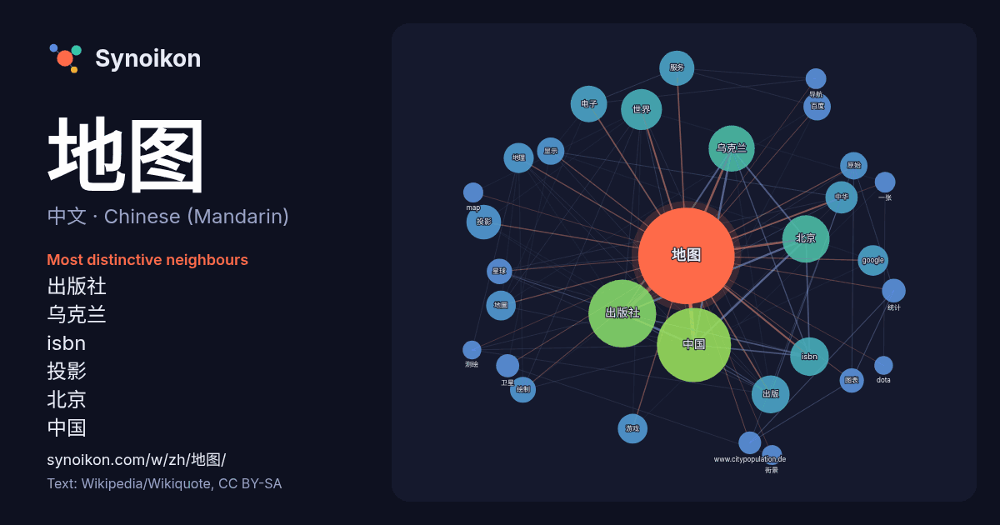

中文 · Chinese (Mandarin) · word of the day list
地图
“map” · The words found around it in 1316 instances from Chinese (Mandarin) Wikipedia, Wikiquote.

Most distinctive neighbours
- 出版社 105×
- 乌克兰 69×
- isbn 49×
- 投影 41×
- 北京 38×
- 中国 37×
- 电子 33×
- google 30×
- 地圖 28×
- 百度 27×
- 出版 26×
- 地理 25×
- 中华 25×
- 绘制 24×
- 服务 24×
- 图表 22×
- 星球 22×
- 原始 21×
- www.citypopulation.de 20×
- 显示 20×
× = how many times more often than in general Chinese (Mandarin) Wikipedia text.
Most frequent neighbours
- 中国 206
- 出版社 172
- 北京 84
- 乌克兰 80
- 世界 63
- isbn 56
- 出版 54
- 电子 50
- 服务 46
- 投影 45
- 中华 39
- 使用 37
- google 35
- 地理 34
- 地圖 33
- 提供 33
- 游戏 33
- 人口 30
- 原始 28
- 显示 28
In context
- 地图是根据一定的数学法则，即某种地图投影，将地球或其他星球的自然现象和社会现象通过概括和符号缩绘在平面上的图形。按照統一的設計和要求編制的多幅地圖的彙集被稱作“地圖集”或者“地圖冊”。 自从石器时代，人类开始制作地图。其中最早的地图公元前6200年于土耳其地区出现。古埃及人使用蘆葦繪製地圖 Wikipedia snippets · 地图
- Google地图（英語：Google Maps；前稱Google Local）是Google公司向全球提供的电子地图服务，地图包含地標、線條、形狀等信息，提供矢量地图、卫星照片、地形图等三种視图。其兄弟產品包括Google地球、Google月球、Google火星、Google星空、Google海洋 Wikipedia snippets · Google地图
- 在地图学中，地图投影（英語：map projection）是一种将地球表面展平的方法，以便制作地图，这就需要一种方法将球面上的点转换为平面上的点。 将球体投影到平面上，球面必然会有一定程度的变形，根据地图的目的，有些变形是可以接受的，有些则是不可以接受的，因此，为了保留球面的某些性质而牺牲其他性质，就存在不同的地图投影。 Wikipedia snippets · 地图投影
- 世界地圖是指地球表面的地圖，一般畫有經緯線、地名等資料，使用者可以藉經緯線在世界地圖上找出各地方，也可以知道南極、北極的位置。有多種方法把地球表面投影到平面上。 巴比伦世界地图绘制于公元前6世纪，是世界已知最古老的地图。最早的地图显示出人类当时所认为的海洋包围陆地的观点。 Wikipedia snippets · 世界地图
- dOS、visionOS以及watchOS系統中預設的網路地圖服務。 「蘋果地圖」首次發表在2012年的蘋果公司全球軟體開發者年會（縮寫：WWDC），蘋果公司公布將在iOS 6及往後的版本中取代「Google地圖」作為新的預設地圖服務。地图的数据主要由荷兰导航系统制造商“TomTom公司”和自由內 Wikipedia snippets · 蘋果地圖
- 高德地图（英語：Amap）是中国大陆领先的数字地图内容、导航及位置服务解决方案提供商，由高德软件有限公司开发，隶属于阿里巴巴集团。作为中国日活跃用户数（DAU）最高的移动出行应用之一，高德地图已从单纯的地理信息工具演变为集出行、旅游、餐饮娱乐为一体的综合性“本地生活服务”平台。 高德地图 Wikipedia snippets · 高德地圖
- 百度地图是百度于2005年9月发布的地图服务项目，它是百度公司与北京图为先科技有限公司联合开发的电子地图服务。图为先是一个电子地图服务提供公司，先前开发了“图吧”（Mapbar）。 百度地图目前主要地图数据涵蓋大中华地区，包括中国大陆、香港、澳门、臺灣，以及海外国家。 百度地圖 Wikipedia snippets · 百度地图
- 站点地图（英語：Sitemaps，旧称Google Sitemaps，也写为Sitemap；又称网站地图）是一种列有某个网站所有网址（URL）的XML文件，由Google最先发起。利用Sitemaps协议，网站管理员可以列出网站上可以供搜索引擎抓取的URL，并通知给后者。Sitemaps中包含有关每 Wikipedia snippets · 站点地图
More Chinese (Mandarin) words
Precomputed on 2026-10-09 with default settings (±5 words, medium corpus). The interactive map can refresh it with live data.